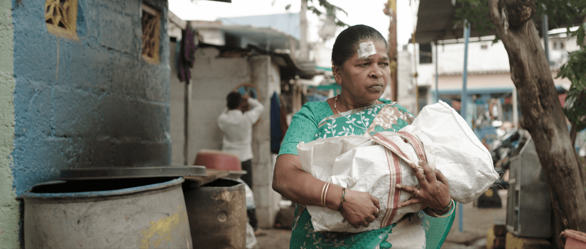

失嬰謎蹤
Where is Pinki?導演 普里特維康納努 Prithvi KONANUR
★☆★ 2021 紐約印度影展最佳女演員、劇本
★☆★ 2021 墨爾本印度影展最佳導演特別提及
★☆★ 2021 香港電影節
★☆★ 2020 釜山影展
媽媽出門工作，家中不到一歲的寶寶卻給保姆顧到失蹤，闖下大禍的她倉皇尋找孩子下落，報警處理、沿街探問，這邊才聽聞線索，那頭又失去蹤影。一路上鋒迴路轉，逼著人們抖出祕密，更翻攪出一個又一個的社會漏洞，但是寶寶究竟到哪兒去了？當孩子的權益被擺上天秤，所有人都得正視自身問題，並證明自己值得相信。
導演多次探訪貧民窟，啟用大量素人本色演出，賦予虛實交錯的故事最真實的質地。嚴禁爆雷的劇本經精心設計，層層翻轉宛如阿斯哈法哈蒂的電影，藉由尋嬰串起體制沉痾、警政弊病，以及廿一世紀印度社會的階級、信仰與婚姻問題。底層小民縱無惡意卻也難有善良道德的餘裕，非典型全職母親更背負著諸般社會壓力。在罪與罰之外，以澄澈的悲憫照見社會百態人心。
Young middle-class couple Bindu and Girish live with their 8-month-old baby girl, Pinki, in Bangalore. During the day, Pinki is left home with the housekeeper and nanny Sannamma. One morning when Bindu returns home to pick up a document, she discovers to her horror that neither Pinki nor Sannamma is at home and their apartment a mess. A frantic search for Pinkie begins across the city slums and suburbs.
